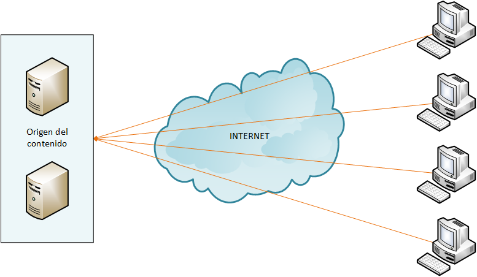
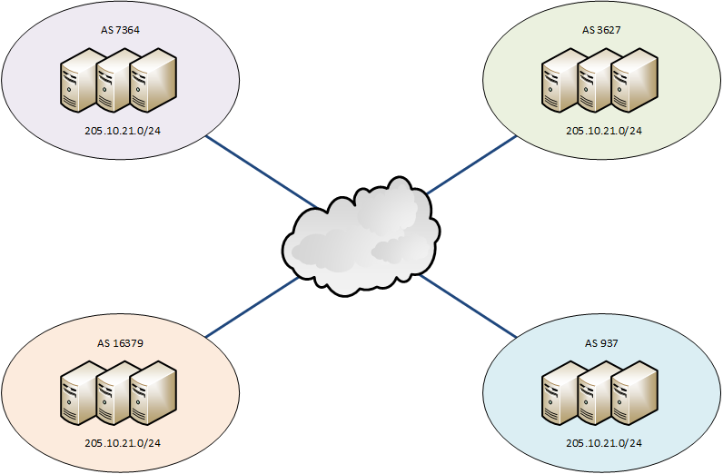

| z, ? | toggle help (this) |
| space, → | next slide |
| shift-space, ← | previous slide |
| b | blank screen |
| d | toggle debug mode |
| ## <ret> | go to slide # |
| c, t | table of contents (vi) |
| f | toggle footer |
| g | toggle follow |
| r | reload slides |
| n | toggle notes |
| p | run preshow |
| P | toggle pause |
| s | choose style |
Leandro Di Tommaso
Esta presentacion: http://leoditommaso.github.io/drinking-mate-presentation/

Se debe dirigir al cliente al servidor más conveniente. Existen dos maneras para identificar los servidores más cercanos:
